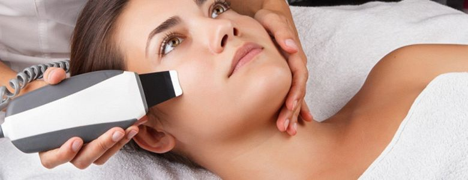

Ультразвуковая чистка лица
Ультразвуковая чистка лица – универсальная аппаратная процедура, направленная на бережное и эффективное очищение кожи от отмерших клеток, сальных пробок, комедонов, угрей. После УЗИ-пилинга кожа становится свежее, нежнее, цвет лица приобретает отдохнувший и здоровый вид, повышается увлажненность.
Многие из нас мечтают об идеальной коже, которая не требует вообще никакого ухода, но увы, как показывает жизненный опыт, такого не бывает. Повсеместно, то и дело, приходится сталкиваться с немалым количеством проблем с кожей лица. В зависимости от того, какого она типа (жирная, сухая или комбинированная) необходимо подбирать соответствующее средство ухода. Проблем добавляют и поры — их перманентно приходится чистить от накопившейся там грязи.

Характерные особенности, присущие данной процедуре:
- Очищение происходит при помощи ультразвукового скраббера.
- Кожный покров покрывается гелем (вид геля подбирается под тип вашей кожи), который безупречно проводит ультразвуковое излучение.
Его волны имеют достаточно глубокое воздействие и таким образом делается так называемый микромассаж клеток и тканей.
- Отшелушивается верхний слой уже отмерших клеток, происходит очистка пор от всевозможных скоплений грязи.
- Разглаживаются мелкие морщинки.
- Стимулируется выработка такого важного веществ, как коллаген.
Результат просто потрясающий! Вы не узнаете свое лицо! Сияющее жизненной силой и чистое – оно будет радовать Ваш взор каждый раз, как решите посмотреть в зеркало.
Ультразвуковое очищение — почему нужно его выбрать?
- Отсутствие болевых ощущений.
- Не сравнится с ним и механическая чистка лица.
- Комплексное воздействие.
Процедура помогает выровнять кожу, сузить поры и избавить Вас от ненавистных угрей. Кроме того, если Вы являетесь обладательницей жирной кожи, которая раздражает своим неприятным, сальным блеском, то данная процедура очень эффективно уменьшит жировые выделения.
Знали ли Вы, что ультразвук крайне бережно очищает кожу, не усугубляя проблему покраснений в случае купероза.
Чистка кожного покрова ультразвуком подразделяется на следующие этапы:
- Очищение лица от косметики специализированными косметическими средствами (тонизация, эксфолиация).
- Чистка ультразвуком (тонизация).
- Применение поросуживающей или другой маски, которая поспособствует сужению пор (тонизация).
- Завершающая стадия: наносится крем в соответствии с типом кожи.